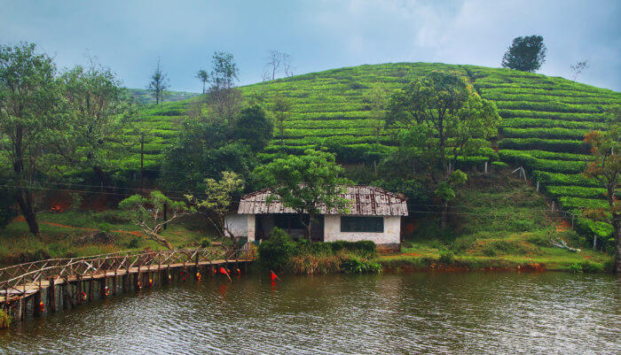

Welcome...
Explore and Enjoy...
KOTTAYAM
Kottayam is an important trading center of spices and commercial crops, especially rubber. Most of India's natural rubber originates from the acres of well-kept plantations of Kottayam, also home to the Rubber Board. Kottayam literally means the interior of a fort—Kotta + Akam. Flanked by the Western Ghats on the east and the Vembanad Lake and paddy fields of Kuttanad on the west, Kottayam is a place that is known for extraordinary qualities.